Imagens

Todos nós nos lembramos dos icônicos personagens que nos aterrorizaram nas telas do cinema. Atormentados pela presença de vilões sanguinários, as vítimas em filmes do gênero SLASHER costumam ser retratadas como adolescentes inconsequentes e irresponsáveis, forçadas a lutar desesperadamente por suas vidas em um cenário onde a única certeza é que serão caçadas e eliminadas UMA A UMA.
BRUTAL foi meticulosamente concebido para trazer a angústia e o suspense de um filme SLASHER diretamente para as mesas de RPG, oferecendo uma estrutura sólida para narrativas imprevisíveis com regras simples e envolventes. Neste jogo, participantes têm a chance de aumentar suas probabilidades de sobrevivência à medida que desafiam seus próprios limites.
RPG ou Role Playing Game é um tipo de jogo onde os participantes assumem o papel de personagens em um mundo fictício. Através da interpretação, os jogadores interagem entre si e com o ambiente, desenvolvendo histórias que evoluem conforme suas escolhas e ações. Os RPGs podem ser jogados presencialmente, com papel, dados e livros de regras, ou em formatos digitais, como videogames e plataformas online. O principal objetivo é a imersão narrativa e a construção colaborativa de aventuras.
Algumas curiosidades sangrentas sobre o Brutal RPG:
Veja a brutalidade em tempo real:
Aqui os jogadores enfrentam decisões insensatas e encarnam os arquétipos clássicos dos sobreviventes de filmes de terror. Como o Atleta confiante que acredita que pode superar qualquer perigo, o Nerd que domina as regras como ninguém, a Inocente que, de alguma forma, sempre acaba viva no final... as opções são variadas e prontas para serem dilaceradas pelo terror que se aproxima!
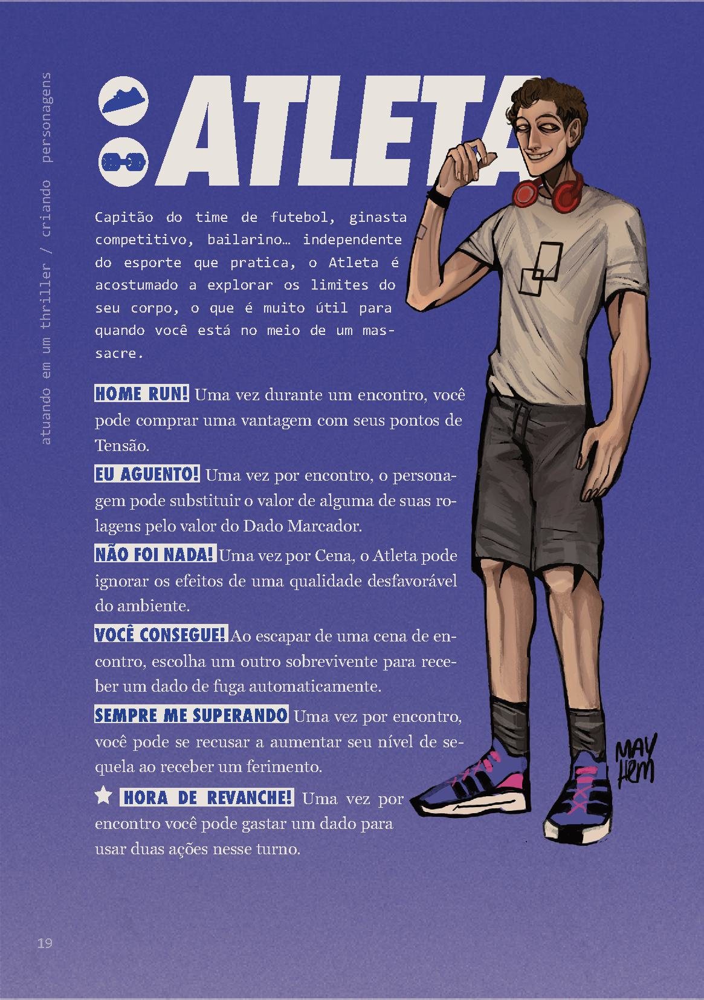 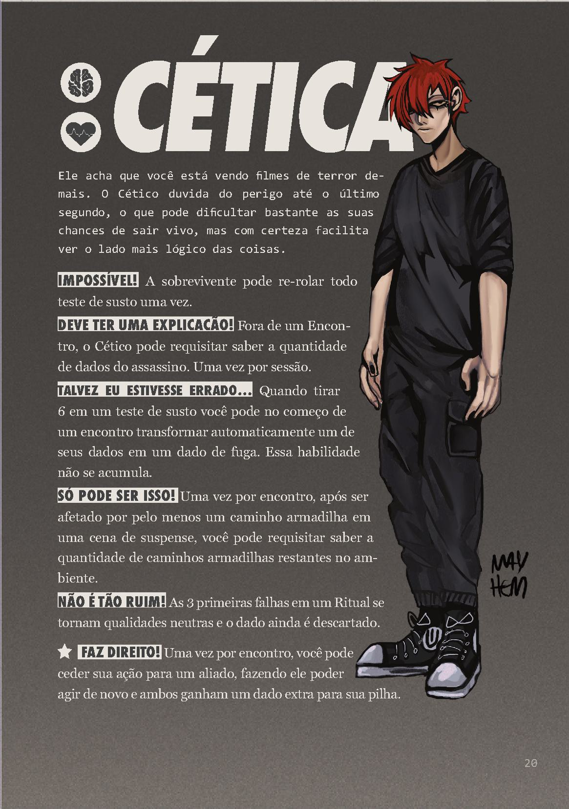 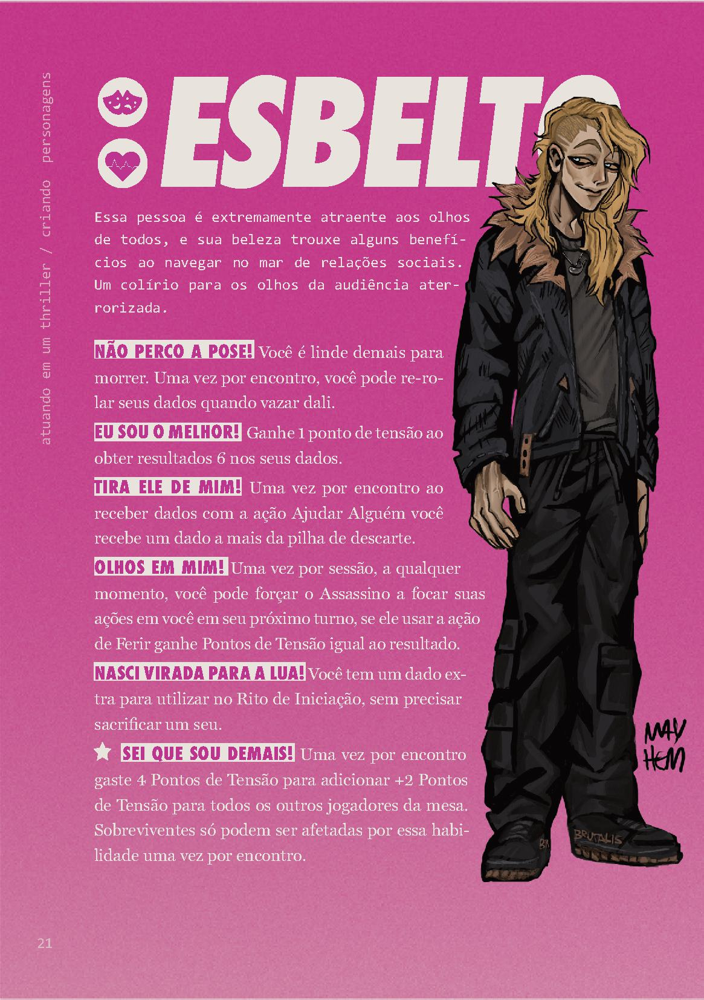 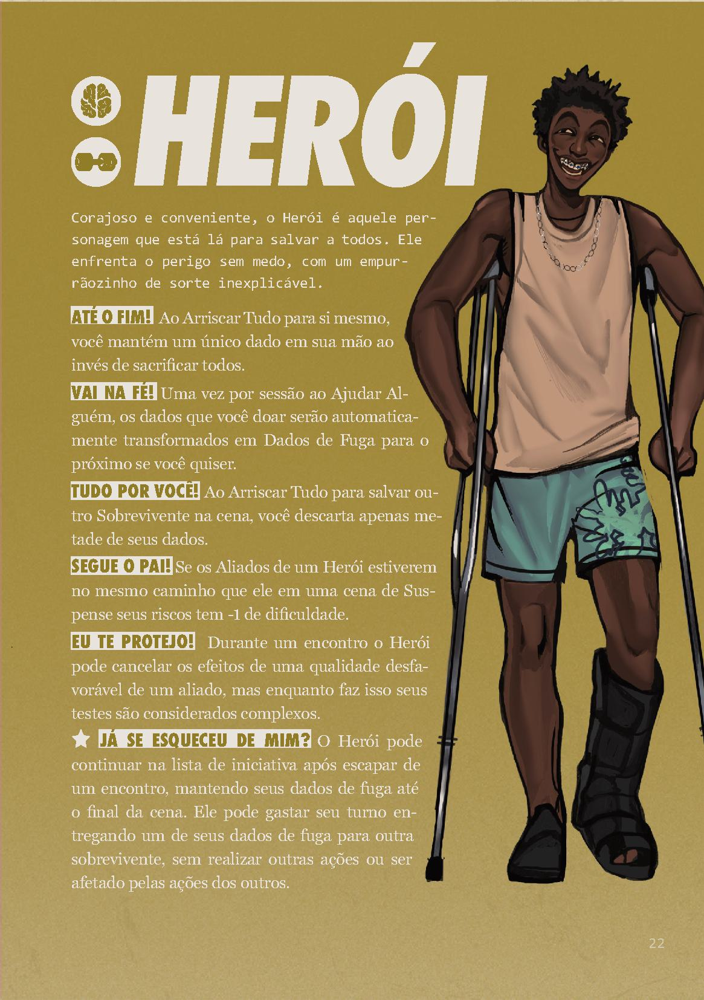 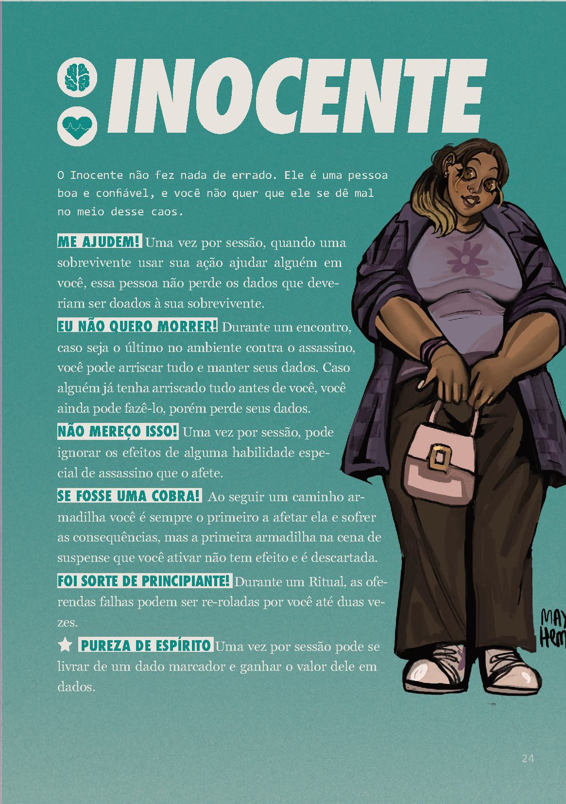 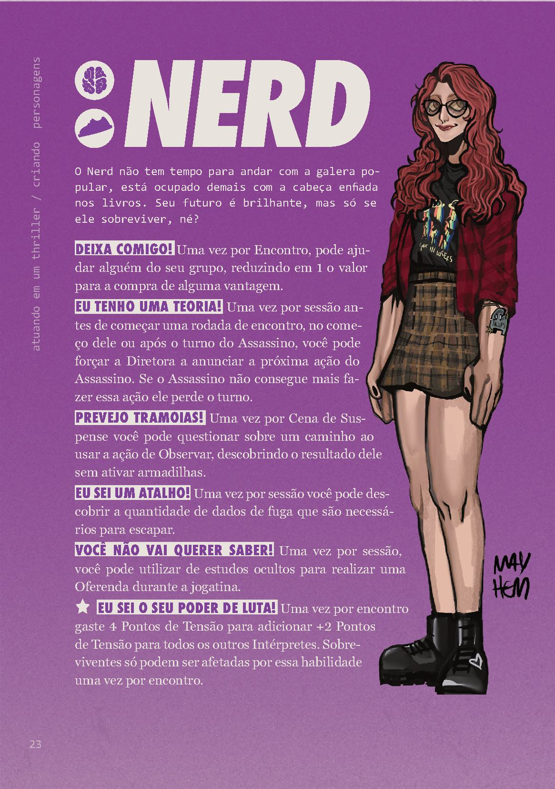 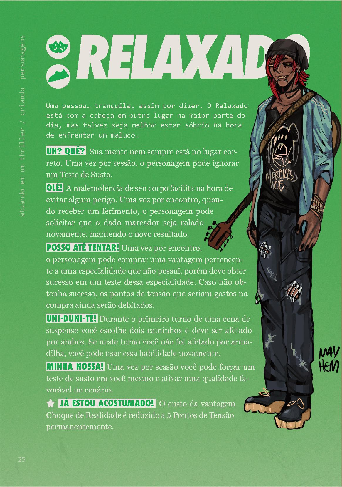 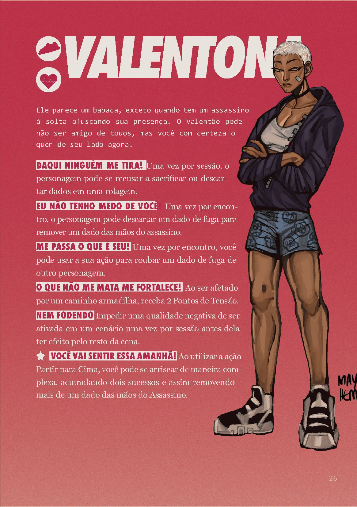Em determinado momento, os personagens vão perceber que há um grande perigo. Seja uma criatura bizarra que está espreitando o lago, ou um serial killer que está solto novamente, e vai caça-los um a um...
Brutamonte, Carniceiro, Monstro, Amaldiçoado, Perseguidor, Estratégico, Assombração, Obstinada... Existem vários tipos de assasinos que podem ir atrás dos jogadores, alguns exclusivos do universo de brutal e outros assasinos famosos das telas de cinemas adaptados para o sistema. Vamos conhecer alguns deles?
 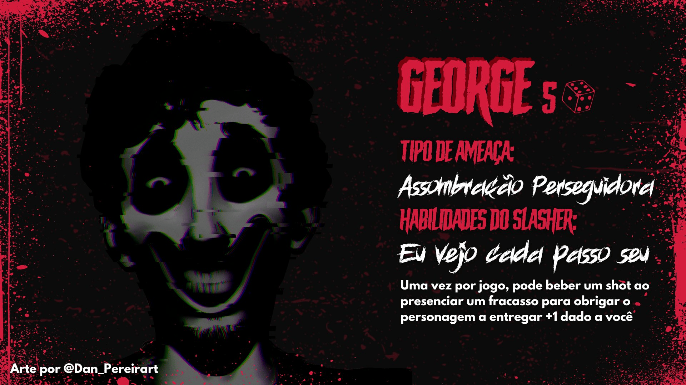
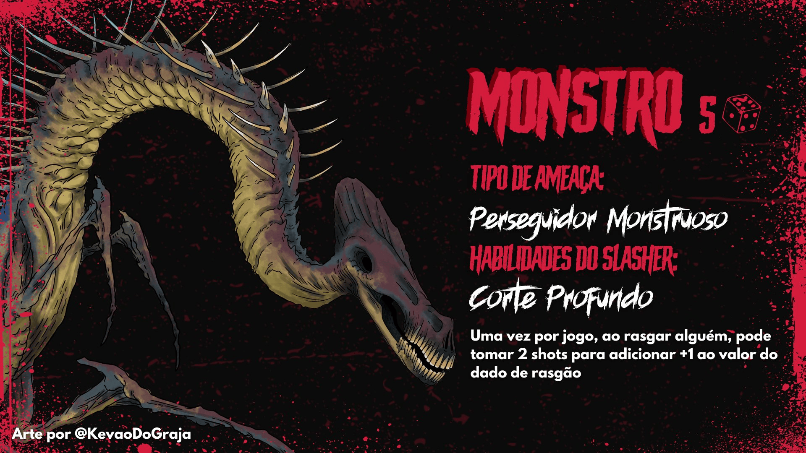
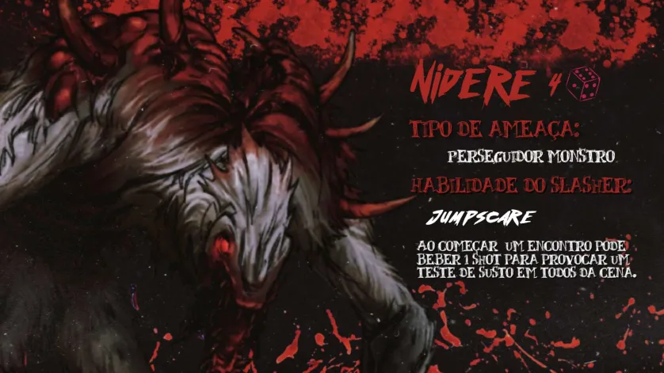
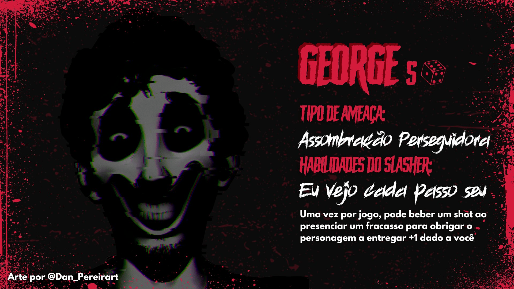
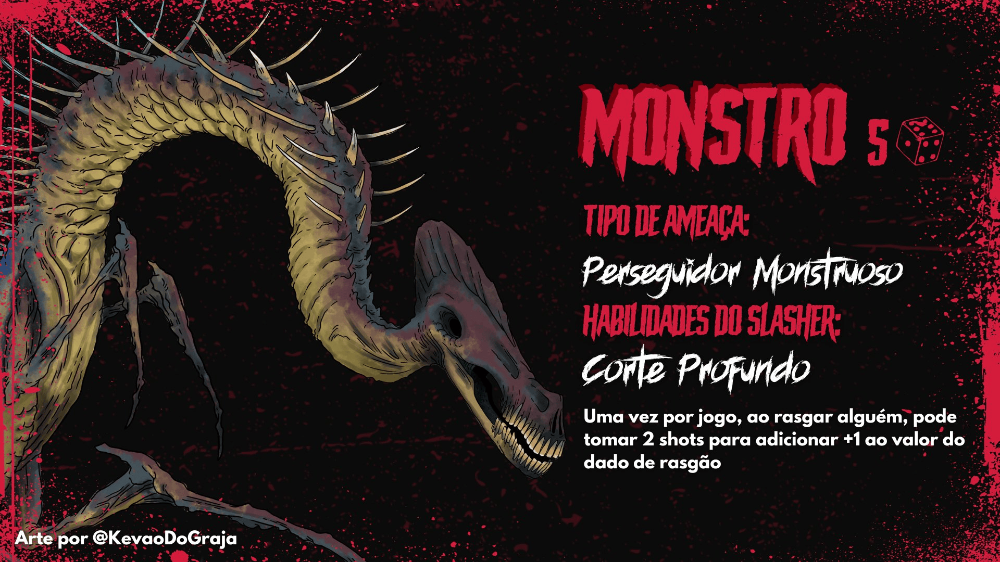
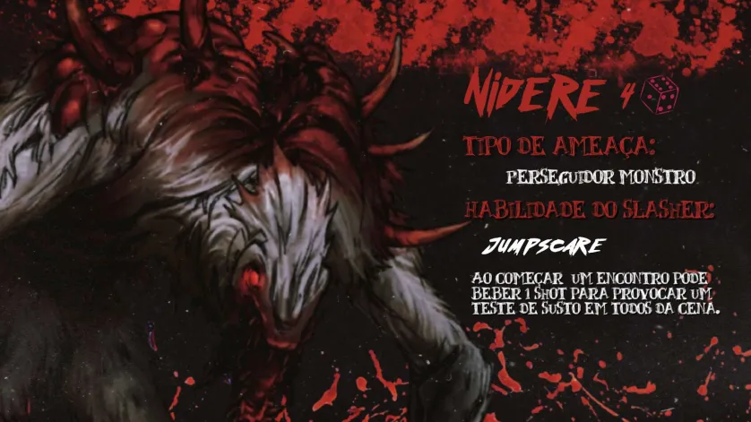
Acesse o discord de BRUTAL! e outras redes sociais.
Financiamento coletivo do BRUTAL o financiamento foi encerrado.
Playlist com as sessões de BRUTAL no Youtube
Conheça a equipe de BRUTAL!